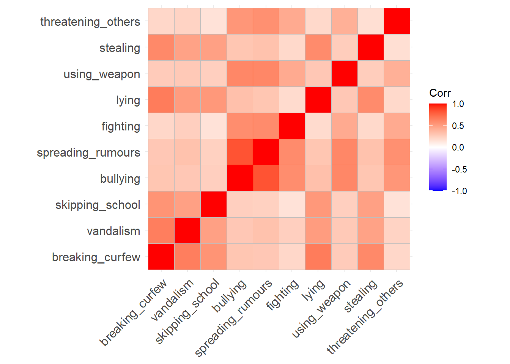

We’re going to be needing some different packages this week (no more lme4!).
Make sure you have these packages installed:
psych
GPArotation
car
Reducing the dimensionality of job performance
Data: jobperfbonus.csv
A company has asked line managers to fill out a questionnaire that asks them to rate the performance of each employee. The dataset we are providing contains each employee’s rating on 15 different aspects of their performance.
The company doesn’t know what to do with so much data, and wants us to reduce it to a smaller number of distinct variables.
Probably going to want to use PCA, because we’re less interested in thinking about underlying latent dimensions of ‘job performance’ - i.e. we want to get a ‘composite’ rather than an underlying factor.
Question 2
Explore the relationships between variables in the data. Below are various ways to do this.
You’re probably going to want to subset out just the relevant variables (q1 to q15).
Correlation Matrix
You can give the cor() function a dataset and it will show you the correlations between all pairs of variables.
It returns a ‘correlation matrix’ - which has a row for each variable and a column for each variable. Correlation matrices are square (same number of rows as columns), and symmetric (rotate it 90 degrees and it looks the same). The diagonals of the correlation matrix are all 1, because every variable is perfectly correlated with itself.
Correlation matrices can get big! For \(k\) variables, the correlation matrix contains \(\frac{k(k+1)}{2}\) unique numbers. Sometimes you can get more from visualising the correlation matrix.
library(ggcorrplot)ggcorrplot(cor(eg_data))
Scatterplot Matrix
A Scatterplot Matrix is basically the same idea as a correlation matrix, but instead of the numeric correlation coefficient between each pair, we have a scatterplot between each pair.
It’s a good way to check for linearity of relationships prior to data reduction. These methods of data reduction are all based on correlations, which assume the relations we are capturing are linear.
We can check linearity of relations using pairs() and also pairs.panels(data) (from the psych package), and you can view the histograms on the diagonals, allowing you to check univariate normality (which is usually a good enough proxy for multivariate normality).
pairs(data) - make a scatterplot matrix
from psych, pairs.panels(data) - make a scatterplot matrix with correlations on the upper triangle
from car, scatterplotMatrix(data)
Additionally, also from psych, the multi.hist(data) function will give us the individual histograms for each variable
Let’s keep the full data with the names, but make a new object that is just the performance data:
qperf <- jobperf |>select(-name)
It looks like we’ve got some very strong groups of questions there - q1 to q5 are all highly related to one another, as are q6 to q10, and q11 to q15. Furthermore, the relations between those sets are very weak, suggesting 3 groups that are fairly distinct.
library(ggcorrplot)ggcorrplot(cor(qperf))
You’ll probably have to zoom in when you do this yourself, as there are a lot of little plots there!
library(psych)pairs.panels(qperf)
Question 3
How much variance in the data will be captured by 15 principal components?
Hints
We can figure this out without having to do anything - it’s a theoretical question!
All of it!
The right hand entry of the “Cumulative Var” row is 1 - it explains everything.
How many components should we keep? Below are some reminders of the various criteria we can use to help us come to a decision.
Kaiser’s rule
According to Kaiser’s rule, we should keep the principal components having variance larger than 1.
The variances of each PC are shown in the row of the output named SS loadings and also in the $values from the object created by principal().
Standardized variables have a variance equal 1, and if we have \(k\) standardised variables, then the total variance in the data is \(k\). An eigenvalue of <1 represents that it is accounting for less variance than any individual original variable.
NOTE: Kaiser’s Rule will very often lead to over-extracting (keeping too many components)
The scree plot
The scree plot is a graphical criterion which involves plotting the variance for each principal component. This can be easily done by calling plot on the variances, which are stored in $values of the object created by principal(), or by using the scree() function from the psych package.
When conducting an EFA as opposed to a PCA, you can remove the factors = FALSE bit.
library(psych)scree(eg_data, factors =FALSE)
A typical scree plot features higher variances for the initial components and quickly drops to small variances where the curve is almost flat. The flat part of the curve represents the noise components, which are not able to capture the main sources of variability in the system.
According to the scree plot criterion, we should keep as many principal components up to where the “elbow” in the plot occurs. So in the above plot, the elbow occurs at 2, so we would keep 1.
NOTE: Scree plots are subjective and may have multiple or no obvious kinks/elbows, making them hard to interpret
Velicer’s Minimum Average Partial (MAP) method
The Minimum Average Partial (MAP) test computes the partial correlation matrix (removing and adjusting for a component from the correlation matrix), sequentially partialling out each component. At each step, the partial correlations are squared and their average is computed.
At first, the components which are removed will be those that are most representative of the shared variance between 2+ variables, meaning that the “average squared partial correlation” will decrease. At some point in the process, the components being removed will begin represent variance that is specific to individual variables, meaning that the average squared partial correlation will increase.
The MAP method is to keep the number of components for which the average squared partial correlation is at the minimum.
We can conduct MAP in R using the VSS() function.
When conducting an EFA as opposed to a PCA, you can set fm and rotate to the factor extraction method and rotation of your choosing.
library(psych)VSS(eg_data, rotate ="none", plot =FALSE, fm="pc", n =ncol(eg_data))
Very Simple Structure
Call: vss(x = x, n = n, rotate = rotate, diagonal = diagonal, fm = fm,
n.obs = n.obs, plot = plot, title = title, use = use, cor = cor)
VSS complexity 1 achieves a maximimum of 0.91 with 1 factors
VSS complexity 2 achieves a maximimum of 0.95 with 2 factors
The Velicer MAP achieves a minimum of 0.06 with 1 factors
BIC achieves a minimum of Inf with factors
Sample Size adjusted BIC achieves a minimum of Inf with factors
Statistics by number of factors
vss1 vss2 map dof chisq prob sqresid fit RMSEA BIC SABIC complex eChisq
1 0.91 0.00 0.065 0 NA NA 9.5e-01 0.91 NA NA NA NA NA
2 0.78 0.95 0.225 0 NA NA 5.2e-01 0.95 NA NA NA NA NA
3 0.61 0.90 0.523 0 NA NA 2.4e-01 0.98 NA NA NA NA NA
4 0.51 0.81 1.000 0 NA NA 4.5e-02 1.00 NA NA NA NA NA
5 0.43 0.69 NA 0 NA NA 1.4e-29 1.00 NA NA NA NA NA
SRMR eCRMS eBIC
1 NA NA NA
2 NA NA NA
3 NA NA NA
4 NA NA NA
5 NA NA NA
(be aware there is a lot of other information in this output too! For now just focus on the map column), and the part of the output that says “The Velicer MAP achieves a minimum of 0.06 with ?? factors”.
NOTE: The MAP method will sometimes tend to under-extract (suggest too few components)
Parallel analysis
Parallel analysis involves simulating lots of datasets of the same dimension but in which the variables are uncorrelated. For each of these simulations, a PCA is conducted on its correlation matrix, and the eigenvalues are extracted. We can then compare our eigenvalues from the PCA on our actual data to the average eigenvalues across these simulations. In theory, for uncorrelated variables, no components should explain more variance than any others, and eigenvalues should be equal to 1. In reality, variables are rarely truly uncorrelated, and so there will be slight variation in the magnitude of eigenvalues simply due to chance. The parallel analysis method suggests keeping those components for which the eigenvalues are greater than those from the simulations.
It can be conducted in R using the fa.parallel() function.
When conducting an EFA as opposed to a PCA, you can set fa = "both" to do this for both factor extraction and principal components.
According to the Scree plot, I would suggest keeping 3 components
scree(qperf, factors =FALSE)
According to the MAP, we should keep 3 components
VSS(qperf, n =ncol(qperf), rotate ="none", fm ="pc", plot =FALSE)
Very Simple Structure
Call: vss(x = x, n = n, rotate = rotate, diagonal = diagonal, fm = fm,
n.obs = n.obs, plot = plot, title = title, use = use, cor = cor)
VSS complexity 1 achieves a maximimum of 0.95 with 3 factors
VSS complexity 2 achieves a maximimum of 0.97 with 6 factors
The Velicer MAP achieves a minimum of 0.02 with 3 factors
BIC achieves a minimum of Inf with factors
Sample Size adjusted BIC achieves a minimum of Inf with factors
Statistics by number of factors
vss1 vss2 map dof chisq prob sqresid fit RMSEA BIC SABIC complex eChisq
1 0.41 0.00 0.137 0 NA NA 2.5e+01 0.41 NA NA NA NA NA
2 0.70 0.71 0.079 0 NA NA 1.2e+01 0.71 NA NA NA NA NA
3 0.95 0.96 0.021 0 NA NA 1.6e+00 0.96 NA NA NA NA NA
4 0.95 0.96 0.031 0 NA NA 1.3e+00 0.97 NA NA NA NA NA
5 0.83 0.97 0.046 0 NA NA 1.0e+00 0.98 NA NA NA NA NA
6 0.84 0.97 0.070 0 NA NA 7.3e-01 0.98 NA NA NA NA NA
7 0.77 0.95 0.100 0 NA NA 5.6e-01 0.99 NA NA NA NA NA
8 0.76 0.93 0.123 0 NA NA 3.9e-01 0.99 NA NA NA NA NA
9 0.68 0.93 0.149 0 NA NA 2.9e-01 0.99 NA NA NA NA NA
10 0.68 0.93 0.204 0 NA NA 2.1e-01 0.99 NA NA NA NA NA
11 0.68 0.93 0.258 0 NA NA 1.5e-01 1.00 NA NA NA NA NA
12 0.61 0.92 0.386 0 NA NA 8.8e-02 1.00 NA NA NA NA NA
13 0.60 0.87 0.540 0 NA NA 4.3e-02 1.00 NA NA NA NA NA
14 0.60 0.87 1.000 0 NA NA 1.5e-02 1.00 NA NA NA NA NA
15 0.60 0.87 NA 0 NA NA 1.5e-27 1.00 NA NA NA NA NA
SRMR eCRMS eBIC
1 NA NA NA
2 NA NA NA
3 NA NA NA
4 NA NA NA
5 NA NA NA
6 NA NA NA
7 NA NA NA
8 NA NA NA
9 NA NA NA
10 NA NA NA
11 NA NA NA
12 NA NA NA
13 NA NA NA
14 NA NA NA
15 NA NA NA
According to the parallel analysis, we should keep 3 components
fa.parallel(qperf, fa="pc", n.iter =500)
Parallel analysis suggests that the number of factors = NA and the number of components = 3
In this case, everything agrees that we should retain 3 components:
guides
suggestion
Kaiser
3
Scree
3
MAP
3
Parallel Analysis
3
Question 5
Conduct a principal components analysis extracting the number of components you decided on from the previous question.
Be sure to set rotate = "none" (a conventional PCA does not use rotations - it is simply about data reduction. The line is a bit blurred here, but once we start introducing rotations, we are moving more towards a form of EFA).
Examine the loadings for the components. By thinking in relation to the questions that were asked (refer back to Table 1), what do you think each component is capturing?
It’s rarely as neat as this, but we can see the patterns of higher loadings for the groups of 5 questions on each component.
PC1 has higher loadings for q1 to q5
PC2 has higher loadings for q6 to q10
PC3 has higher loadings for q11 to q15
Looking back at the questions in Table 1, questions 1 to 5 were all about stuff related to ‘project management’. Questions 6 to 10 were all about collaboration with team members, and questions 11 to 15 were all about technical skill.
principal(qperf, nfactors =3, rotate ="none")
Principal Components Analysis
Call: principal(r = qperf, nfactors = 3, rotate = "none")
Standardized loadings (pattern matrix) based upon correlation matrix
PC1 PC2 PC3 h2 u2 com
q1 0.86 0.30 -0.20 0.88 0.12 1.4
q2 0.83 0.21 -0.22 0.78 0.22 1.3
q3 0.73 0.23 -0.21 0.63 0.37 1.4
q4 0.83 0.31 -0.23 0.83 0.17 1.4
q5 0.86 0.30 -0.23 0.87 0.13 1.4
q6 -0.37 0.81 -0.11 0.80 0.20 1.4
q7 -0.36 0.80 -0.14 0.79 0.21 1.5
q8 -0.34 0.80 -0.09 0.76 0.24 1.4
q9 -0.27 0.70 -0.05 0.56 0.44 1.3
q10 -0.33 0.75 -0.15 0.70 0.30 1.5
q11 0.21 0.24 0.84 0.82 0.18 1.3
q12 0.17 0.17 0.72 0.57 0.43 1.2
q13 0.19 0.15 0.76 0.64 0.36 1.2
q14 0.25 0.17 0.73 0.62 0.38 1.3
q15 0.11 0.19 0.79 0.68 0.32 1.2
PC1 PC2 PC3
SS loadings 4.13 3.54 3.27
Proportion Var 0.28 0.24 0.22
Cumulative Var 0.28 0.51 0.73
Proportion Explained 0.38 0.32 0.30
Cumulative Proportion 0.38 0.70 1.00
Mean item complexity = 1.3
Test of the hypothesis that 3 components are sufficient.
The root mean square of the residuals (RMSR) is 0.04
with the empirical chi square 146.87 with prob < 1.2e-08
Fit based upon off diagonal values = 0.99
Question 6
Extract the scores on the principal components.
The company wants to reward teamwork. Pick 10 people they should give a bonus to.
Hints
As seen in the reading, we can extract scores (a score on each component for each row of our original dataset) using the $scores from the object fitted with principal().
This will contain as many sets of scores as there are components. One of these (given the previous question) might be of use here.
You’ll likely want to join them back to the column of names. So we can figure out who gets the bonus. cbind() or bind_cols() might help here.
The second component seems to capture a lot of ‘teamwork’ related questions. So if we extract scores on that second component, we could then pick the 10 people for whom they are highest on that component.
Let’s combine them with the original data that contains the employee names, so we can figure out who to give bonuses to.
We could do this with cbind(), or bind_cols(),
# first we bind the columns of the scores, back to # the original data which contains the namesjobperf <-bind_cols(principal(qperf, nfactors =3, rotate ="none")$scores, jobperf ) # we can then choose just the 10 people # who have the highest scores on PC2 (the teamwork component)jobperf |>select(name, PC2) |>arrange(desc(PC2))
A researcher is developing a new brief measure of Conduct Problems. She has collected data from n=450 adolescents on 10 items, which cover the following behaviours:
Breaking curfew
Vandalism
Skipping school
Bullying
Spreading malicious rumours
Fighting
Lying
Using a weapon
Stealing
Threatening others
Our task is to use the dimension reduction techniques we learned about in the lecture to help inform how to organise the items she has developed into subscales.
Read in the dataset.
Create a correlation matrix for the items, and inspect the items to check their suitability for exploratory factor analysis (below are a couple of ways we can do this).
Bartlett’s Test
The function cortest.bartlett(cor(data), n = nrow(data)) conducts “Bartlett’s test”. This tests against the null that the correlation matrix is proportional to the identity matrix (a matrix of all 0s except for 1s on the diagonal).
Null hypothesis: observed correlation matrix is equivalent to the identity matrix
Alternative hypothesis: observed correlation matrix is not equivalent to the identity matrix.
What is the identity matrix?
The “Identity matrix” is a matrix of all 0s except for 1s on the diagonal.
e.g. for a 3x3 matrix: \[
\begin{bmatrix}
1 & 0 & 0 \\
0 & 1 & 0 \\
0 & 0 & 1 \\
\end{bmatrix}
\] If a correlation matrix looks like this, then it means there is no shared variance between the items, so it is not suitable for factor analysis
Kaiser, Meyer, Olkin Measure of Sampling Adequacy
You can check the “factorability” of the correlation matrix using KMO(data) (also from psych!).
Rules of thumb:
\(0.8 < MSA < 1\): the sampling is adequate
\(MSA <0.6\): sampling is not adequate
\(MSA \sim 0\): large partial correlations compared to the sum of correlations. Not good for FA
Kaiser’s suggested cuts
These are Kaiser’s corresponding adjectives suggested for each level of the KMO:
0.00 to 0.49 “unacceptable”
0.50 to 0.59 “miserable”
0.60 to 0.69 “mediocre”
0.70 to 0.79 “middling”
0.80 to 0.89 “meritorious”
0.90 to 1.00 “marvelous”
cpdata <-read.csv("../../data/conduct_probs_scale.csv")# discard the first columncpdata <- cpdata[,-1]
Here’s a correlation matrix. There’s no obvious blocks of items here, but we can see that there are some fairly high correlations, as well as some weaker ones. All are positive.
ggcorrplot(cor(cpdata))

The Bartlett’s test comes out with a p-value of 0 (which isn’t possible, but it’s been rounded for some reason). This suggests that we reject the null of this test (that our correlation matrix is proportional to the identity matrix). This is good. It basically means “we have some non-zero correlations”!
cortest.bartlett(cor(cpdata), n=450)
$chisq
[1] 2237.533
$p.value
[1] 0
$df
[1] 45
The overall sampling adequacy is 0.87, which is pretty good! (or rather, which is ‘meritorious’!). MSA for all items is >.8
Finally, all the relationships here look fairly linear:
pairs.panels(cpdata)
Question 8
How many dimensions should be retained?
This question can be answered in the same way as we did above for PCA - use a scree plot, parallel analysis, and MAP test to guide you.
You can use fa.parallel(data, fa = "both") to conduct both parallel analysis and view the scree plot!
The scree plot shows a kink at 3, which suggests retaining 2 components.
scree(cpdata)
The MAP suggests retaining 2 factors. I’m just extracting the actuall map values here to save having to show all the other output. We can see that the 2nd entry is the smallest:
Parallel analysis suggests that the number of factors = 2 and the number of components = 2
Again, a quite clear picture that 2 factors is preferred:
guides
suggestion
Scree
2
MAP
2
Parallel Analysis
2
Question 9
Use the function fa() from the psych package to conduct and EFA to extract 2 factors (this is what we suggest based on the various tests above, but you might feel differently - the ideal number of factors is subjective!). Use a suitable rotation (rotate = ?) and extraction method (fm = ?).
myfa <-fa(data, nfactors = ?, rotate = ?, fm = ?)
Hints
Would you expect factors to be correlated? If so, you’ll want an oblique rotation.
For example, you could choose an oblimin rotation to allow factors to correlate and use minres as the extraction method.
Inspect your solution. Make sure to look at and think about the loadings, the variance accounted for, and the factor correlations (if estimated).
Hints
Just printing an fa object:
myfa <-fa(data, ..... )myfa
Will give you lots and lots of information.
You can extract individual parts using:
myfa$loadings for the loadings
myfa$Vaccounted for the variance accounted for by each factor
myfa$Phi for the factor correlation matrix
You can find a quick guide to reading the fa output here: efa_output.pdf.
Things look pretty good here. Each item has a clear primary loading on to one of the factors, and the complexity for all items is 1 (meaning they’re clearly link to just one of the factors). The h2 column is showing that the 2 factor solution is explaining 39%+ of the variance in each item. Both factors are well determined, having a at least 3 salient loadings.
The 2 factors together explain 57% of the variance in the data - both factors explain a similar amount (29% for factor 1, 28% for factor 2).
We can also see that there is a moderate correlation between the two factors. Use of an oblique rotation was appropriate - if the correlation had been very weak, then it might not have differed much from if we used an orthogonal rotation.
We can see that, ordered like this, we have five items that have high loadings for one factor and another five items that have high loadings for the other.
The five items for factor 1 all have in common that they are non-aggressive forms of conduct problems. The five items for factor 2 are all more aggressive behaviours. We could, therefore, label our factors: ‘non-aggressive’ and ‘aggressive’ conduct problems.
Question 12
Compare your three different solutions:
your current solution from the previous questions
one where you fit 1 more factor
one where you fit 1 fewer factors
Which one looks best?
Hints
We’re looking here to assess:
how much variance is accounted for by each solution
do all factors load on 3+ items at a salient level?
do all items have at least one loading at a salient level?
are there any “Heywood cases” (communalities or standardised loadings that are >1)?
should we perhaps remove some of the more complex items?
is the factor structure (items that load on to each factor) coherent, and does it make theoretical sense?
The 1-factor model explains 39% of the variance (as opposed to the 57% explained by the 2 factor solution), and all items load fairly high on the factor. The downside here is that we’re not discerning between different types of conduct problems that we did in the 2 factor solution.
Factor Analysis using method = minres
Call: fa(r = cpdata, nfactors = 1, fm = "minres")
Standardized loadings (pattern matrix) based upon correlation matrix
MR1 h2 u2 com
breaking_curfew 0.66 0.44 0.56 1
vandalism 0.62 0.38 0.62 1
skipping_school 0.55 0.30 0.70 1
bullying 0.74 0.54 0.46 1
spreading_rumours 0.75 0.56 0.44 1
fighting 0.55 0.30 0.70 1
lying 0.64 0.41 0.59 1
using_weapon 0.62 0.38 0.62 1
stealing 0.60 0.37 0.63 1
threatening_others 0.52 0.27 0.73 1
MR1
SS loadings 3.94
Proportion Var 0.39
Mean item complexity = 1
Test of the hypothesis that 1 factor is sufficient.
df null model = 45 with the objective function = 5.03 with Chi Square = 2237.53
df of the model are 35 and the objective function was 1.97
The root mean square of the residuals (RMSR) is 0.16
The df corrected root mean square of the residuals is 0.18
The harmonic n.obs is 450 with the empirical chi square 1010.36 with prob < 2e-189
The total n.obs was 450 with Likelihood Chi Square = 875.46 with prob < 3.6e-161
Tucker Lewis Index of factoring reliability = 0.506
RMSEA index = 0.231 and the 90 % confidence intervals are 0.218 0.245
BIC = 661.63
Fit based upon off diagonal values = 0.86
Measures of factor score adequacy
MR1
Correlation of (regression) scores with factors 0.94
Multiple R square of scores with factors 0.87
Minimum correlation of possible factor scores 0.75
The 3-factor model explains 60% of the variance (only 3% more than the 2-factor model). Notably, the third factor is not very clearly defined - it only has 1 salient loading (possibly 2 if we consider the 0.3 to be salient, but that item is primarily loaded on the 2nd factor).
Factor Analysis using method = minres
Call: fa(r = cpdata, nfactors = 3, rotate = "oblimin", fm = "minres")
Standardized loadings (pattern matrix) based upon correlation matrix
MR1 MR2 MR3 h2 u2 com
breaking_curfew -0.01 0.63 0.30 0.72 0.28 1.4
vandalism 0.08 0.22 0.64 0.68 0.32 1.3
skipping_school 0.00 0.59 0.11 0.45 0.55 1.1
bullying 0.89 0.09 -0.10 0.82 0.18 1.0
spreading_rumours 0.92 -0.01 0.01 0.84 0.16 1.0
fighting 0.67 -0.14 0.15 0.45 0.55 1.2
lying 0.02 0.83 -0.05 0.66 0.34 1.0
using_weapon 0.63 0.08 0.01 0.45 0.55 1.0
stealing 0.04 0.72 -0.01 0.54 0.46 1.0
threatening_others 0.63 -0.10 0.10 0.40 0.60 1.1
MR1 MR2 MR3
SS loadings 2.95 2.26 0.79
Proportion Var 0.29 0.23 0.08
Cumulative Var 0.29 0.52 0.60
Proportion Explained 0.49 0.38 0.13
Cumulative Proportion 0.49 0.87 1.00
With factor correlations of
MR1 MR2 MR3
MR1 1.00 0.40 0.28
MR2 0.40 1.00 0.64
MR3 0.28 0.64 1.00
Mean item complexity = 1.1
Test of the hypothesis that 3 factors are sufficient.
df null model = 45 with the objective function = 5.03 with Chi Square = 2237.53
df of the model are 18 and the objective function was 0.03
The root mean square of the residuals (RMSR) is 0.01
The df corrected root mean square of the residuals is 0.01
The harmonic n.obs is 450 with the empirical chi square 3.36 with prob < 1
The total n.obs was 450 with Likelihood Chi Square = 11.65 with prob < 0.86
Tucker Lewis Index of factoring reliability = 1.007
RMSEA index = 0 and the 90 % confidence intervals are 0 0.023
BIC = -98.32
Fit based upon off diagonal values = 1
Measures of factor score adequacy
MR1 MR2 MR3
Correlation of (regression) scores with factors 0.96 0.93 0.84
Multiple R square of scores with factors 0.92 0.86 0.71
Minimum correlation of possible factor scores 0.84 0.72 0.41
Question 13
Drawing on your previous answers and conducting any additional analyses you believe would be necessary to identify an optimal factor structure for the 10 conduct problems, write a brief text that summarises your method and the results from your chosen optimal model.
Hints
Write about the process that led you to the number of factors. Discuss the patterns of loadings and provide definitions of the factors.
The main principles governing the reporting of statistical results are transparency and reproducibility (i.e., someone should be able to reproduce your analysis based on your description).
An example summary would be:
First, the data were checked for their suitability for factor analysis. Normality was checked using visual inspection of histograms, linearity was checked through the inspection of the linear and lowess lines for the pairwise relations of the variables, and factorability was confirmed using a KMO test, which yielded an overall KMO of \(.87\) with no variable KMOs \(<.50\). An exploratory factor analysis was conducted to inform the structure of a new conduct problems test. Inspection of a scree plot alongside parallel analysis (using principal components analysis; PA-PCA) and the MAP test were used to guide the number of factors to retain. All three methods suggested retaining two factors; however, a one-factor and three-factor solution were inspected to confirm that the two-factor solution was optimal from a substantive and practical perspective, e.g., that it neither blurred important factor distinctions nor included a minor factor that would be better combined with the other in a one-factor solution. These factor analyses were conducted using minres extraction and (for the two- and three-factor solutions) an oblimin rotation, because it was expected that the factors would correlate. Inspection of the factor loadings and correlations reinforced that the two-factor solution was optimal: both factors were well-determined, including 5 loadings \(>|0.3|\) and the one-factor model blurred the distinction between different forms of conduct problems. The factor loadings are provided in Table 21. Based on the pattern of factor loadings, the two factors were labelled ‘aggressive conduct problems’ and ‘non-aggressive conduct problems’. These factors had a correlation of \(r=.43\). Overall, they accounted for 57% of the variance in the items, suggesting that a two-factor solution effectively summarised the variation in the items.
Table 2: Factor Loadings
MR1
MR2
spreading_rumours
0.92
bullying
0.89
fighting
0.67
threatening_others
0.63
using_weapon
0.63
vandalism
0.87
stealing
0.77
lying
0.71
skipping_school
0.68
breaking_curfew
0.68
Footnotes
You should provide the table of factor loadings. It is conventional to omit factor loadings \(<|0.3|\); however, be sure to ensure that you mention this in a table note.↩︎